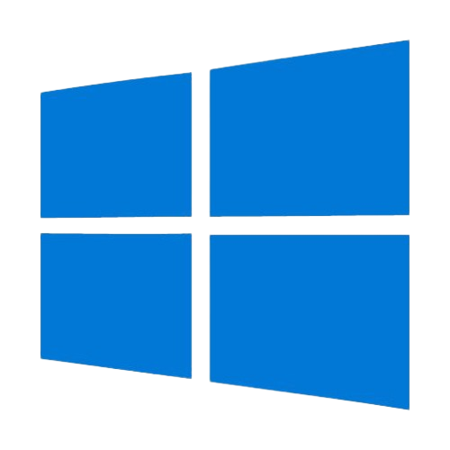
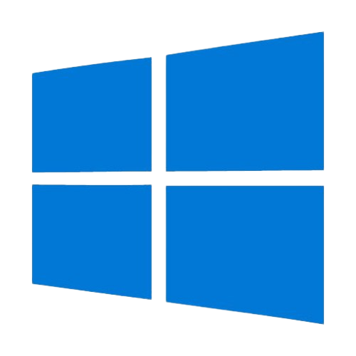

Fundamentos de Tecnologia
da Informação
Conheça o essencial dos Fundamentos de Tecnologia da Informação

Introdução
A disciplina de Tecnologia da Informação (T.I) apresenta ao aluno o universo da computação de forma prática e acessível. Ela envolve desde conceitos básicos de hardware e software até lógica de programação, redes, segurança digital e o uso de ferramentas tecnológicas no cotidiano. O objetivo principal é desenvolver raciocínio lógico, autonomia e familiaridade com tecnologias que fazem parte do mundo moderno. Ao longo da matéria, o estudante aprende a entender como os computadores funcionam, como dados são processados e como criar soluções simples por meio de algoritmos e programação.
Conceitos de Tecnologia da Informação
O que é o Hardware?
Hardware é o conjunto de componentes físicos de um computador ou dispositivo eletrônico. Ele engloba todas as peças materiais responsáveis por executar operações, armazenar dados, processar informações e permitir a interação do usuário com a máquina.
Dentro do hardware, existem vários tipos de componentes, como:
Hardware interno, que fica dentro do gabinete: processador (CPU), memória RAM, placa-mãe, placa de vídeo, HD/SSD, entre outros.
Hardware externo (periféricos), que ficam fora do computador: teclado, mouse, monitor, impressora, caixas de som etc.
Em resumo, o hardware é tudo o que dá corpo ao computador. Sem ele, os programas e sistemas (o software) não conseguiriam funcionar, já que é o hardware que executa todas as instruções enviadas pelo software.
Peças Hardware
Placa-mãe
A placa-mãe é a peça principal do computador, responsável por conectar todos os componentes e permitir que eles funcionem juntos. É nela que ficam encaixados o processador, a memória RAM, o armazenamento, a placa de vídeo e várias portas, como USB e áudio. Além disso, ela distribui energia para as peças e possui o BIOS/UEFI, que inicia o computador e verifica se tudo está funcionando corretamente. Em resumo, a placa-mãe é a base que integra e coordena todo o sistema.
Processador
O processador, também chamado de CPU, é o componente que faz os cálculos e toma as decisões dentro do computador. Ele interpreta os comandos dos programas e executa as operações necessárias, funcionando como o “cérebro” da máquina.
Quanto mais rápido e eficiente for o processador, mais tarefas o computador consegue realizar ao mesmo tempo e com melhor desempenho. Ele trabalha em alta velocidade, seguindo ciclos de processamento para receber dados, analisar e devolver resultados. Em resumo, o processador é o responsável por fazer tudo acontecer por trás dos cliques.

Memória RAM
A memória RAM é onde o computador guarda temporariamente tudo o que está sendo usado no momento — programas abertos, páginas carregadas e processos em execução. Ela funciona como um espaço rápido de trabalho: quanto mais RAM o computador tiver, mais tarefas ele consegue realizar ao mesmo tempo sem travar. Quando o PC é desligado, tudo que estava na RAM é apagado.
Sistemas Operacionais
Um sistema operacional é o software principal que controla todo o computador. Ele faz a ponte entre o usuário, os programas e o hardware, garantindo que tudo funcione corretamente.
Ele organiza arquivos, gerencia a memória, controla dispositivos (como teclado, mouse e impressora) e permite que você abra aplicativos, navegue na internet e execute tarefas do dia a dia.
Sem um sistema operacional, o computador não conseguiria realizar nenhuma função prática.

 

O que é o Sistema de Arquivos?
Sistema de arquivos é a estrutura que o sistema operacional usa para organizar, armazenar e localizar dados dentro de um dispositivo de armazenamento, como HDs, SSDs ou pendrives. Ele define como arquivos e pastas são criados, nomeados, acessados e gerenciados, garantindo ordem, segurança e eficiência no uso do espaço disponível.
Modos dos Sistemas de Arquivos:
Modo texto (CMD):
No modo texto, o sistema operacional é controlado por comandos digitados. O usuário interage através de linhas de instrução, como cd, dir ou mkdir. Esse modo é leve, rápido e permite executar tarefas avançadas de forma precisa, sem janelas ou elementos visuais.
Modo gráfico (Explorer):
No modo gráfico, a interação acontece por meio de janelas, ícones, botões e menus. O usuário utiliza o mouse para navegar pelos arquivos e programas, tornando o uso mais intuitivo. O Windows Explorer é o gerenciador visual de arquivos nesse ambiente, oferecendo uma navegação simples e acessível.
Softwares de Escritório: O que são?
Software de escritório é um conjunto de programas desenvolvidos para facilitar tarefas cotidianas de produtividade, como criação de documentos, elaboração de planilhas, montagem de apresentações e organização de informações. Esses softwares são projetados para oferecer ferramentas práticas que auxiliam tanto no trabalho profissional quanto nos estudos, permitindo escrever textos, realizar cálculos, analisar dados, gerar relatórios, criar apresentações visuais e até gerenciar bancos de dados simples. Normalmente são agrupados em pacotes — como Microsoft Office, LibreOffice e Google Workspace — que reúnem diferentes aplicativos integrados, garantindo compatibilidade entre arquivos, facilidade de uso e colaboração.
Além de agilizar rotinas, softwares de escritório desempenham um papel essencial na padronização de documentos e na comunicação dentro de empresas, escolas e instituições. Eles permitem que usuários editem, revisem e compartilhem informações com praticidade, além de oferecerem recursos extras, como modelos prontos, gráficos, funções automatizadas e ferramentas de formatação. Dessa forma, tornam o trabalho mais eficiente e organizado, contribuindo para a produtividade em praticamente qualquer área que lide com informação escrita, cálculos ou apresentações visuais.